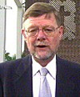
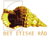
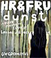

|
||
|
I kategorien: Årets laks
(én der svømmer mod strømmen) Er de 4 nominerede: Kjeld Holm  Da Anders Fogh Rasmussen sidste år fik tildelt Årets Laks af LBL, blussede debatten om kirkelig vielse af homo-par atter op. Ikke mindst blandt daværende kirkeminister Tove Fergo og forskellige fraktioner af kirken. Århus-biskoppen Kjeld Holm tog initiativ til planlægningen af et kirkeligt ritual for vielse af homoseksuelle par, og i januar var han blandt det flertal på syv biskopper, der stemte for at indføre en såkaldt "gudstjenestelig velsignelse" af homoseksuelle par. Fire biskopper stemte imod. Kjeld Holm sagde i den forbindelse, at han forventer, at der om tre til fem år vil foreligge et egentligt vielsesritual i folkekirkens ritualbog.Kjeld Holm er i sandhed en laks, der jævnligt møder modstand blandt mange kirkelige, og han var derfor også nomineret til lakse-prisen sidste år. Børns Vilkår Mange diskussioner for og imod bøsser og lesbiskes mulighed for at adoptere ender med diskussionen om ”barnets tarv”. Derfor er det afgørende, at Børns Vilkår i april gik ud og fortalte, at organisationen nu støtter, at homoseksuelle får de samme muligheder som heteroseksuelle med hensyn til kunstig befrugtning og adoption. Børns Vilkår har tidligere været skeptisk over for at give homoseksuelle muligheder for kunstig befrugtning og adoption - alene begrundet i hensynet til børnene – men nye undersøgelser fra USA og Sverige har rykket foreningen. Undersøgelserne viser, at børn i homoseksuelle familier trives lige så som godt som de øvrige børn i undersøgelserne. Det Etiske Råd  Kort før jul spurgte Sundhedsministeren Det Etiske Råd om, hvem der har ret til kunstig befrugtning, og i april forelå svaret: Et flertal på 10 medlemmer går ind for, at enlige og lesbiske skal have mulighed for at blive kunstigt befrugtet både i privat og offentligt regi. Som loven er i dag skal kvinden enten være gift eller leve sammen med en mand for at kunne blive kunstigt befrugtet. Men kravet er moraliserende og bør ophæves, mener et flertal. Et mindretal på fem medlemmer er dog fortsat mod kunstig befrugtning af lesbiske.dunst  Bjarne pigen, Dennis Agerblad, Hairwerk, Knud Vesterskov, Lene Leth Lebbe, Miss Fish, Puta, Ramona Macho, Tina Trash, Tove Hansen og mange andre. Persongalleriet af trans-trash-drags-drenge er stort, når Dunst dunster løs. Fælles for dem er, at de går imod pænheden og heteroficeringen af homo-miljøet. Dunst har efterhånden mange berømte og berygtede fester på samvittigheden – i nyere tid bl.a. HR&FRU dunst i Ungdomshuset, hvor kategorierne bl.a. var hetero, hår, poppers, plørehul, strik og dyr.Men Dunst er mere end fester. Senest er radioen begyndt at dunste, hvormed Radio Rosa har fået brudt sit homo-radio-monopol. Miss Fish og de andre nomineres til LBLs fiskepris, fordi de tør svømme mod strømmen, så ingen er i tvivl om, at det er dét, de gør. Hvem husker ikke, da Kanal Dunst blev lukket, fordi Kanal København nægtede at sende et indslag, hvor Ramona Macho spiser en lort…? Kilde: www.lbl.dk/index.php?id=409 |
||
|
Print denne side |